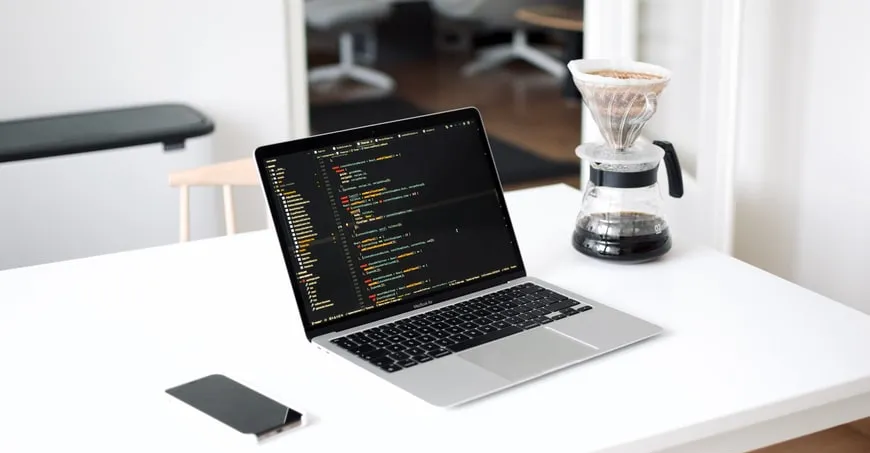
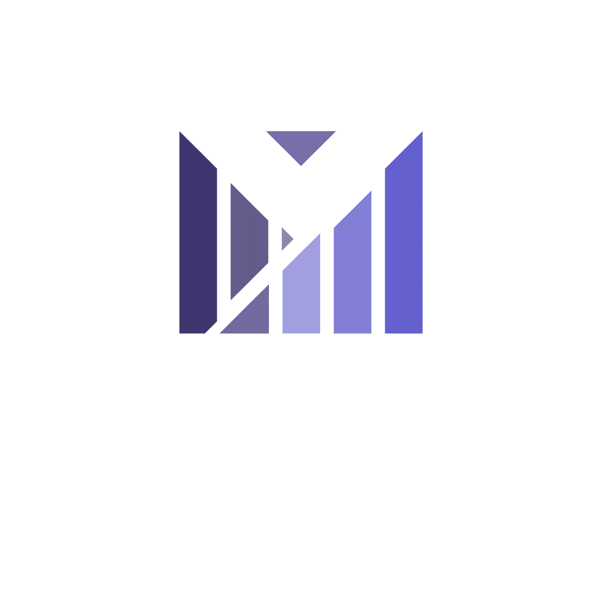
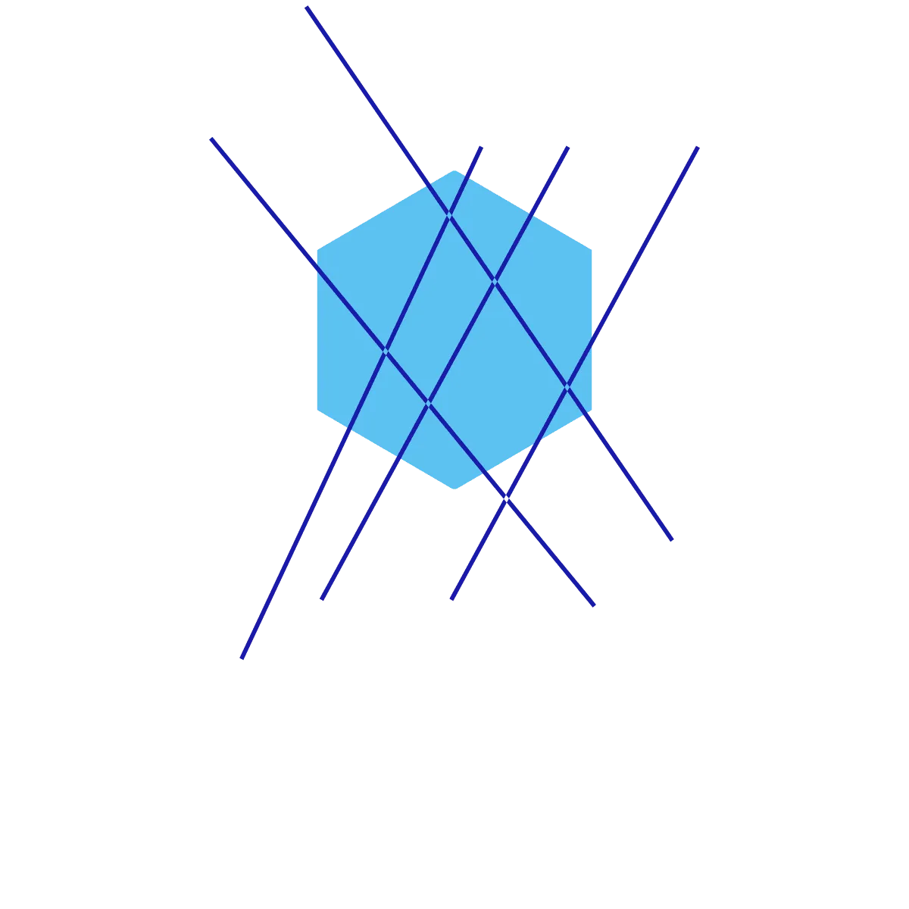
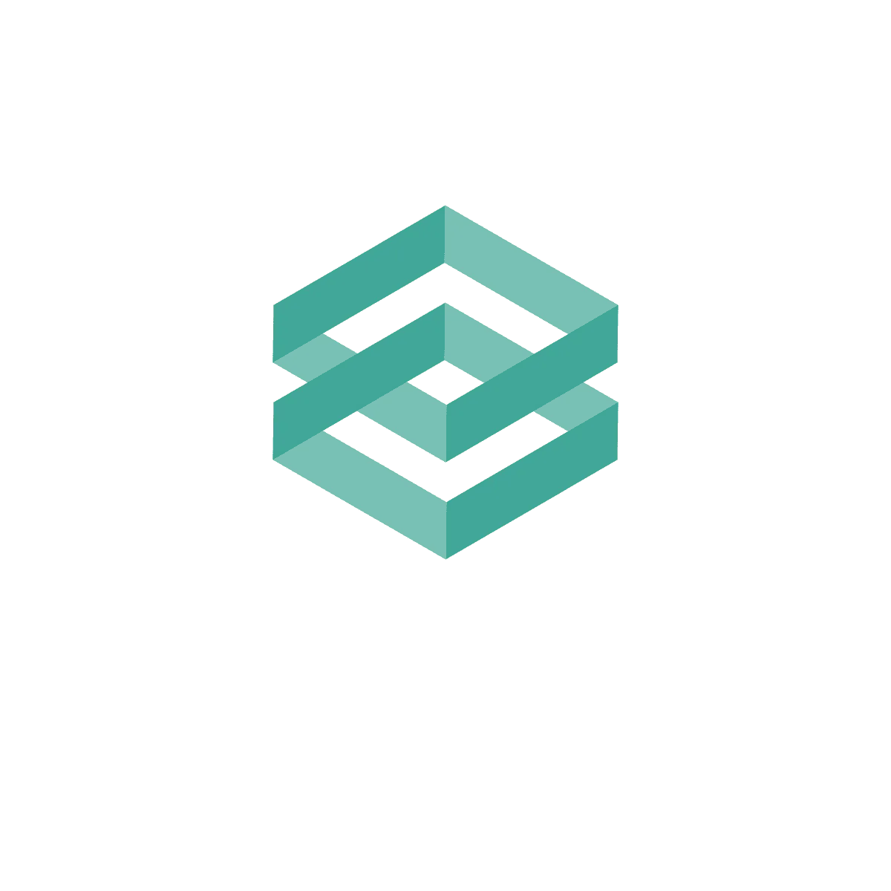
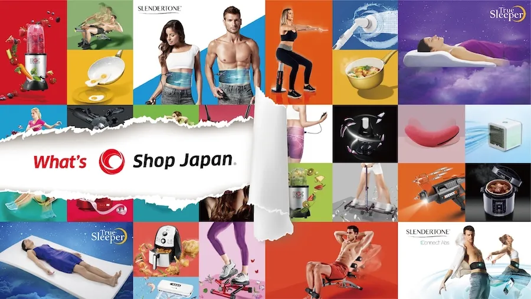

MESSAGE
昨今のWEBサイト、ECサイトにおけるビジネスは極めて複雑なステークホルダー、複雑な技術要素(CDN、クラウド、基幹システム）の組み合わせで構成されているケースが殆どです。顧客体験を最適化する上で、従来の目線で、フロントエンドシステム、バックエンドシステム、インフラの区分けをした組織、担当では解決出来ない問題、課題が顕在化しています。
顧客はWEBサイトにアクセスした瞬間、僅かながらの時間で安定して素早くWEBサイトを見れるか、必要な行動をサポートできるナビゲーションされているかの状態を感じl取って、利用すべきサービスの信頼性/有用性を判断、選択しており、フロントエンドシステム、バックエンドシステム、インフラの区分けなく、顧客体験を最適化するための専門性が必要と断言できます
Byedgeは顧客とサービス提供者の信頼関係を作るべく、WEBサイト、ECサイトのUXを最適化、コンサルティング・実行を支援するプロフェッショナルであると同時に、主要なCDN(CloudFlare/Fastly/Akamai)、パブリッククラウド(AWS/Azure/GCP)、オンプレミス環境のインフラにおける得意不得意を熟知しており、最適な組み合わせをご提案することも可能です。
GALLERY
OUR SERVICE
-

-

-

PORTFORIO

株式会社オークローンマーケティング様WEBサイト表示高速化・内製化コンサルティングの事例
従来のWEBサイト表示スピードに課題を持っていたが、我々のコンサルティングサービスを通じて12秒から約2秒台の大幅なWEBサイト表示スピードを短縮、顧客体験を大きく改善しました。
JTB様、HIS様、外資有名シューズブランド、大手小売、大手量販店ナショナルクライアント様のWEBサイト表示、システム性能改善案件の多数実績(20サイト以上)
デジタルマーケティング、事業部門、IT部門、開発パートナーの連携で課題があるクライアント様において、関係者間の細かい調整、合意形成を図りつつシステム、WEBサイト表示スピード性能改善における目標ゴールとして合意した、KPIを全案件で達成、クライアントの満足・評価を頂いております。
ABOUT US
-
屋号:Byedge(バイエッジ) 〒125-0052
葛飾区柴又1-5-9-302号室TEL 090-1736-2241
e-Mail u.frgment@gmail.com
営業時間 10:00〜17:00（土日、祝日定休）
※年末年始、GW、夏季休暇時期に都合により休業する場合がございます
-